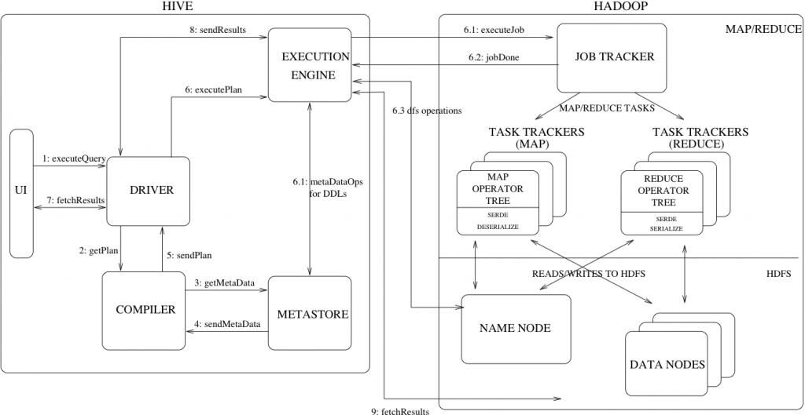

大数据003hive优化相关
一.HIVE执行过程

二.hive表优化
1.分区
- 静态分区
- 动态分区
- set hive.exec.dynamic.partition=true;
- set hive.exec.dynamic.partltlon.mode=nonstrict;
2.分桶
- set hive.enforce.bucketing=true;
- set hive.enforce.sorting=true;
- 表优化数据目标：相同数据尽量聚集在一起
三.Hive job优化
1. 并行化执行
每个查询被hive转化成多个阶段，有些阶段关联性不大，则可以并行化执行，减少执行时问。
|
|
2.本地化执行
set hive.exec.mode.local.auto=true;
当一个job满足如下条件才能真正使用本地模式：
- job的输入数据大小必须小于参数：
- hive.exec.mode.local.inputbytes.max（默认128MB）
- job的map数必须小于参数：
- hive.exec.mode.local.auto.tasks.max（默认4)
- job的reduce数必须为0或者1
3.job合并输入小文件
set hive.input.format=org.apache.hadoop.hive.ql.io.CombineHiveInputFormat
合并文件数由mapred.max.split.size限制的大小决定。
4.job合并输出小文件
- set hive.merge.smallfiles.avgsize=256000000;
当输出文件平均大小小于该值，启动新job合并文件 - set hive.merge.size.per.task=64000000;
合并之后的文件大小
5.JVM重利用
set mapred.job.reuse.jvm.num.tasks=20;
JVM重利用可以是job长时间保留slot，直到作业结束，这在对于有较多任务和较多小文件的任务是非常有意义的，减少执行时间。当然这个值不能设置过大，因为有些作业会有reduce任务，如果reduce任务没有完成，则map任务占用的slot不能释放，其他的作业可能就需要等待。
6.压缩数据
a. 中间压缩就是处理hive查询的多个job之间的数据，对中间压缩，最好选择一个节省CPU耗时的压缩方式。
set hive.exec.compress.intermediate=true；
set hive.intermediate.compression.codec=org.apache.hadoop.io.compress.SnappyCodec;
set hive.intermediate.compression.type=BLOCK;
b. 最终的输出也可以压缩,选择一个压缩效果比较好的，节省了磁盘空间，但是cpu比较耗时。
set hive.exec.compress.output=true;
set mapred.output.compression.codec=org.apache.hadoop.io.compress.GzipCodec;
set mapred.output.compression.type=BLOCK
四. Hive SQL语句优化
1.join优化
set hive.optimize.skewjoin=true; 如果是join过程出现倾斜应该设置为true
set hive.skewjoin.key=100000; 这个是join的键对应的记录条数超过这个值则会进行优化。
2.mapjoin
-
自动执行
set hive.auto.convert.join=true;
set hive.mapjoin.smalltable.filesize=;默认值是25mb -
手动执行
1 2 3select /*+mapjoin(A)*/ f.a,f.b from A t join B f on (f.a==t.a) -
简单总结一下，mapjoin的使用场景：
- 关联操作中有一张表非常小
- (不等值)的链接操作时
- 注：小表尽量设置小一点或用手动方式。
3.bucket join
- 两个表以相同方式划分捅。
- 两个表的桶个数是倍数关系。
|
|
4.修改where的位置进行优化
- join优化前
|
|
- join优化后
|
|
- 这样就能减少join连接的数据量。
5.group by优化
- set hive.groupby.skewindata=true;
如果是group by过程出现倾斜应该设置为true。 - set hive.groupby.mapaggr.checkinterval=100000;
这个是group的键对应的记录条数超过这个值则会进行优化。
6.count distinct优化
优化前（启动一个job，数据量大时，一个reduce负载过重）
|
|
优化后（启动两个job）
|
|
7.union all优化
优化前
|
|
优化后
|
|
五. Hive Map/Reduce优化
1. Map优化
修改map个数进行优化
直接设置mapred.map.tasks无效
set mapred.map.tasks=10；
map个数的计算过程:
1. 默认map个数
default_num=total_size/block_size;
2. 期望大小
goal_num=mapred.map.tasks;
3. 设置处理的文件大小
split_size=max(mapred.min.split.size,b1ock_size);
split_num=total_size/split_size;
4. 计算的map个数
compute_map_num=min(split_num,max(default_num,goal_num))
经过以上的分析，在设置map个数的时候，可以简单的总结为以下几点：
1）如果想增加map个数，则设置mapred.map.tasks为一个较大的值。
2）如果想减小map个数，则设置mapred.min.split.size为一个较大的值。
有如下两种情况：
情况1：输入文件size巨大，但不是小文件增大mapred.min.split.size的值。
情况2：输入文件数量巨大，且都是小文件，就是单个文件的size小于blockSize。
这种情况通过增大mapred.min.spllt.size不可行，
需要使用CombineFileInputFormat将多个input path合并成一个InputSplit送给mapper处理，从而减少mapper的数量。
2.map端聚合
map阶段进行combiner
set hive.map.aggr=true:
3.推测执行
启动多个相同的map，谁先执行完，用谁的。
set mapred.map.tasks.speculative.execution=true
4.shuffle优化
根据需要配置相应参数。
Map端
- io.sort.mb
- io.sort.spill.percent
- min.num.spill.for.combine
- io.sort.factor
- io.sort.record.percent
Reduce端
- mapred.reduce.parallel.copies
- mapred.reduce.copy.backoff
- io.sort.factor
- mapred.job.shuffle.input.buffer.percent
- mapred.job.reduce.input.buffer.percent
Reduce优化
- 需要reduce操作的查询
- 聚合函数sum,count,distinct
- 高级查询group by,join,distribute by,cluster by…
- order by比较特殊，只需要一个reduce，设置reduce个数无效。
5.推断执行
- 设置mapred.reduce.tasks.speculative.execution
或者hive.mapred.reduce.tasks.speculative.execution效果都一样。 - 设置Reduce
- set mapred.reduce.tasks=10; 直接设置
- set hive.exec.reducers.max 默认：999
- set hive.exec.reducers.bytes.per.reducer 默认:1G
- 计算公式
- maxReducers=hive.exec.reducers.max
- perReducer=hive.exec.reducers.bytes.per.reducer
- numReduceTasks=min(maxReducers,input.size/perReducer)
6.启动压缩
- set hive.exec.compress.output=true;
- set mapreduce.output.fileoutputformat.compress=true;
一.减少map数，（当有大量小文件时，启动合并）
- set hive.input.format=org.apache.hadoop.hive.ql.io.CombineHiveInputFormat;
- set mapreduce.input.fileinputformat.split.maxsize=1073741824;
- set mapreduce.input.fileinputformat.split.minsize=1;
- set mapreduce.input.fileinputformat.split.minsize.per.node=536870912;
- set mapreduce.input.fileinputformat.split.minsize.per.rack=536870912;
- 经过测试，这种设置可以在map阶段和并小文件，减少map的数量。
- 注意：在测试的时候，如果文件格式为Textfile，并且启用lzo压缩，不能生效。 rcfile以及orc可以生效，Textfile不启用lzo压缩也可以生效。如果是新集群的话，没有历史遗留的问题的话，建议hive都使用orc文件格式，以及启用lzo压缩。
二.MR作业结束后，判断生成文件的平均大小，如果小于阀值，就再启动一个job来合并文件
- set hive.merge.mapredfiles=true;
- set hive.merge.mapfiles=true;
- set hive.merge.smallfiles.avgsize=268435456;
1. Map输入合并小文件
对应参数：
- set mapred.max.split.size=256000000; #每个Map最大输入大小
- set mapred.min.split.size.per.node=100000000; #一个节点上split的至少的大小
- set mapred.min.split.size.per.rack=100000000; #一个交换机下split的至少的大小
- set Hive.input.format=org.apache.Hadoop.hive.ql.io.CombineHiveInputFormat; #执行Map前
进行小文件合并
- 在开启了org.apache.Hadoop.hive.ql.io.CombineHiveInputFormat后，一个data node节点上多个小文件会进行合并，合并文件数由mapred.max.split.size限制的大小决定。
- mapred.min.split.size.per.node决定了多个data node上的文件是否需要合并~
- mapred.min.split.size.per.rack决定了多个交换机上的文件是否需要合并~
2.输出合并
-
set hive.merge.mapfiles = true #在Map-only的任务结束时合并小文件
-
set hive.merge.mapredfiles = true #在Map-Reduce的任务结束时合并小文件
-
set hive.merge.size.per.task = 25610001000 #合并文件的大小
-
set hive.merge.smallfiles.avgsize=16000000 #当输出文件的平均大小小于该值时，启动一个独立的map-reduce任务进行文件merge
-
set hive.groupby.skewindata=false;
-
set hive.input.format=org.apache.hadoop.hive.ql.io.CombineHiveInputFormat;
-
set mapred.min.split.size = 134217728;
-
set mapred.min.split.size.per.node=134217728;
-
set mapred.min.split.size.per.rack=134217728;
-
set mapred.map.tasks=128;
-
set mapred.reduce.tasks=32;
-
set mapred.map.tasks.speculative.execution=true;
-
set mapred.reduce.tasks.speculative.execution=true;
-
set hive.exec.parallel=true;
-
set hive.exec.parallel.thread.number=32;
-
set hive.merge.mapfiles=true;
-
set hive.merge.mapredfiles=true;
-
set hive.merge.size.per.task = 536870912;
-
set hive.merge.smallfiles.avgsize=67108864;
-
set hive.map.aggr=true;
-
set hive.exec.dynamic.partition=true;使用窗口函数，必须增加，否则会执行失败。
-
在使用union all的时候，系统资源足够的情况下，为了加快Hive处理速度，可以设置如下参数实现并发执行
- set mapred.job.priority=VERY_HIGH;
- set hive.exec.parallel=true;
-
设置map reduce个数 – 设置map capacity
set mapred.job.map.capacity=2000;
set mapred.job.reduce.capacity=2000;
– 设置每个reduce的大小
set hive.exec.reducers.bytes.per.reducer=500000000;
– 直接设置个数
set mapred.reduce.tasks = 15; -
设置任务名称
– 设置名称
set mapred.job.name=my_job_{DATE}; -
Hive文件合并 – 设置文件合并
set abaci.is.dag.job=false;
set hive.merge.mapredfiles=true;
set mapred.combine.input.format.local.only=false;
set hive.merge.smallfiles.avgsize=100000000;
– 在map only的情况下，如上的参数如果没有生效，可以设置如下
– 在HQL的最外层增加distribute by rand()1 2 3 4 5 6 7 8 9 10select * from XXX distribute by rand() use namespace udw_ns; set mapred.job.name=job_name_{DATE}; set hive.mapred.mode=nonstrict; set mapred.reduce.tasks = 600; set hive.exec.dynamic.partition.mode=nonstrict; set hive.exec.dynamic.partition=true; set hive.exec.compress.output=true; set mapred.output.compress=true; set mapred.output.compression.codec=org.apache.hadoop.io.compress.LzoCodec;dfs.block.size
决定HDFS文件block数量的多少(文件个数),它会间接的影响Job Tracker的调度和内存的占用(更影响内存的使用), -
mapred.map.tasks.speculative.execution=true
-
mapred.reduce.tasks.speculative.execution=true
这是两个推测式执行的配置项,默认是true
所谓的推测执行，就是当所有task都开始运行之后，Job Tracker会统计所有任务的平均进度， 如果某个task所在的task node机器配置比较低或者CPU load很高（原因很多），
导致任务执行比总体任务的平均执行要慢，此时Job Tracker会启动一个新的任务（duplicate task），
原有任务和新任务哪个先执行完就把另外一个kill掉，这也是我们经常在Job Tracker页面看到任务执行成功，
但是总有些任务被kill，就是这个原因。 -
mapred.child.java.opts
一般来说，都是reduce耗费内存比较大，这个选项是用来设置JVM堆的最大可用内存，但不要设置过大，如果超过2G(这是数字有待考证)，就应该考虑一下优化程序。
Input Split的大小，决定了一个Job拥有多少个map，默认64M每个Split，如果输入的数据量巨大，那么默认的64M的block会有特别多Map Task，集群的网络传输会很大，给Job Tracker的调度、队列、内存都会带来很大压力。 -
mapred.min.split.size
这个配置决定了每个Input Split 的最小值,也间接决定了一个job的map数量
HDFS块大小是在job写入时决定的,而分片的大小,是由三个元素决定的(在3各种去最大的那个)
(1) 输入的块数
(2) Mapred.min.split.size
(3) Job.setNumMapTasks() -
mapred.compress.map.output
压缩Map的输出，这样做有两个好处：
a)压缩是在内存中进行，所以写入map本地磁盘的数据就会变小，大大减少了本地IO次数
注：数据序列化其实效果会更好，无论是磁盘IO还是数据大小，都会明显的降低。 -
io.sort.mb
- 以MB为单位，默认100M，这个值比较小
- map节点没运行完时，内存的数据过多，要将内存中的内容写入磁盘，这个设置就是设置内存缓冲的大小，在suffle之前
- 这个选项定义了map输出结果在内存里占用buffer的大小，当buffer达到某个阈值(后面那条配置)，会启动一个后台线程来对buffer的内容进行排序，然后写入本地磁盘(一个spill文件)
- 根据map输出数据量的大小，可以适当的调整buffer的大小，注意是适当的调整，并不是越大越好，假设内存无限大，
- io.sort.mb=1024(1G), 和io.sort.mb=300 (300M)，前者未必比后者快：
（1）1G的数据排序一次
（2）排序3次，每次300MB
一定是后者快（归并排序）
- io.sort.spill.percent
- 这个值就是上面提到的buffer的阈值，默认是0.8，既80%，当buffer中的数据达到这个阈值，后台线程会起来对buffer中已有的数据进行排序，然后写入磁盘，此时map输出的数据继续往剩余的20% buffer写数据，如果buffer的剩余20%写满，排序还没结束，map task被block等待。
- 如果你确认map输出的数据基本有序，排序时间很短，可以将这个阈值适当调高，更理想的，如果你的map输出是有序的数据，那么可以把buffer设的更大，阈值设置为1.
- Io.sort.factor
- 同时打开的文件句柄的数量，默认是10
- 当一个map task执行完之后，本地磁盘上(mapred.local.dir)有若干个spill文件，map task最后做的一件事就是执行merge sort，把这些spill文件合成一个文件（partition，combine阶段）。
- 执行merge sort的时候，每次同时打开多少个spill文件，就是由io.sort.factor决定的。打开的文件越多，不一定merge sort就越快，也要根据数据情况适当的调整。
- 注：merge排序的结果是两个文件，一个是index，另一个是数据文件，index文件记录了每个不同的key在数据文件中的偏移量（即partition）。
- 在map节点上，如果发现map所在的子节点的机器io比较重，原因可能是io.sort.factor这个设置的比较小，io.sort.factor设置小的话，如果spill文件比较多，merge成一个文件要很多轮读取操作，这样就提升了io的负载。io.sort.mb小了，也会增加io的负载。
- 如果设置了执行combine的话，combine只是在merge的时候，增加了一步操作，不会改变merge的流程，所以combine不会减少
- 或者增加文件个数。另外有个min.num.spills.for.combine的参数，表示执行一个merge操作时，如果输入文件数小于这个数字，就不调用combiner。如果设置了combiner，在写spill文件的时候也会调用，这样加上merge时候的调用，就会执行两次combine。
- 提高Reduce的执行效率，除了在Hadoop框架方面的优化，重点还是在代码逻辑上的优化.比如：对Reduce接受到的value可能有重复的，此时如果用Java的Set或者STL的Set来达到去重的目的，那么这个程序不是扩展良好的(non-scalable)，受到数据量的限制，当数据膨胀，内存势必会溢出
- mapred.reduce.parallel.copies
- Reduce copy数据的线程数量，默认值是5
- Reduce到每个完成的Map Task 拷贝数据（通过RPC调用），默认同时启动5个线程到map节点取数据。
- 这个配置还是很关键的，如果你的map输出数据很大，有时候会发现map早就100%了，reduce却在缓慢的变化，那就是copy数据太慢了，比如5个线程copy 10G的数据，确实会很慢，这时就要调整这个参数，但是调整的太大，容易造成集群拥堵，所以 Job tuning的同时，也是个权衡的过程，要熟悉所用的数据！
- mapred.job.shuffle.input.buffer.percent
- 当指定了JVM的堆内存最大值以后，上面这个配置项就是Reduce用来存放从Map节点取过来的数据所用的内存占堆内存的比例，默认是0.7，既70%，通常这个比例是够了，但是对于大数据的情况，这个比例还是小了一些，0.8-0.9之间比较合适。（前提是你的reduce函数不会疯狂的吃掉内存）
-
mapred.job.shuffle.merge.percent(默认值0.66)
mapred.inmem.merge.threshold(默认值1000)- 第一个指的是从Map节点取数据过来，放到内存，当达到这个阈值之后，后台启动线程（通常是Linux native process）把内存中的数据merge sort，写到reduce节点的本地磁盘；
- 第二个指的是从map节点取过来的文件个数，当达到这个个数之后，也进行merger sort，然后写到reduce节点的本地磁盘；
- 这两个配置项第一个优先判断，其次才判断第二个thresh-hold。
- 从实际经验来看，mapred.job.shuffle.merge.percent默认值偏小，完全可以设置到0.8左右；第二个默认值1000，完全取决于map输出数据的大小，如果map输出的数据很大，默认值1000反倒不好，应该小一些，如果map输出的数据不大（lightweight），可以设置2000或者以上。
-
mapred.reduce.slowstart.completed.maps （map完成多少百分比时，开始shuffle）
- 当map运行慢，reduce运行很快时，如果不设置mapred.reduce.slowstart.completed.maps会使job的shuffle时间变的很长，
- map运行完很早就开始了reduce，导致reduce的slot一直处于被占用状态。mapred.reduce.slowstart.completed.maps 这个值是和“运行完的map数除以总map数”做判断的，当后者大于等于设定的值时，开始reduce的shuffle。所以当map比reduce的执行时间多很多时，可以调整这个值（0.75,0.80,0.85及以上）
-
下面从流程里描述一下各个参数的作用：
当map task开始运算，并产生中间数据时，其产生的中间结果并非直接就简单的写入磁盘。
这中间的过程比较复杂，并且利用到了内存buffer来进行已经产生的部分结果的缓存，并在内存buffer中进行一些预排序来优化整个map的性能。
每一个map都会对应存在一个内存buffer（MapOutputBuffer），map会将已经产生的部分结果先写入到该buffer中，这个buffer默认是100MB大小，但是这个大小是可以根据job提交时的参数设定来调整的，该参数即为：io.sort.mb。
当map的产生数据非常大时，并且把io.sort.mb调大，那么map在整个计算过程中spill的次数就势必会降低，map task对磁盘的操作就会变少，如果map tasks的瓶颈在磁盘上，这样调整就会大大提高map的计算性能。
map在运行过程中，不停的向该buffer中写入已有的计算结果，但是该buffer并不一定能将全部的map输出缓存下来，当map输出超出一定阈值（比如100M），那么map就必须将该buffer中的数据写入到磁盘中去，这个过程在mapreduce中叫做spill。map并不是要等到将该buffer全部写满时才进行spill，因为如果全部写满了再去写spill，势必会造成map的计算部分等待buffer释放空间的情况。所以，map其实是当buffer被写满到一定程度（比如80%）时，就开始进行spill。这个阈值也是由一个job的配置参数来控制，即io.sort.spill.percent，默认为0.80或80%。这个参数同样也是影响spill频繁程度，进而影响map task运行周期对磁盘的读写频率的。但非特殊情况下，通常不需要人为的调整。调整io.sort.mb对用户来说更加方便。
当map task的计算部分全部完成后，如果map有输出，就会生成一个或者多个spill文件，这些文件就是map的输出结果。map在正常退出之前，需要将这些spill合并（merge）成一个，所以map在结束之前还有一个merge的过程。merge的过程中，有一个参数可以调整这个过程的行为，该参数为：io.sort.factor。该参数默认为10。它表示当merge spill文件时，最多能有多少并行的stream向merge文件中写入。比如如果map产生的数据非常的大，产生的spill文件大于10，而io.sort.factor使用的是默认的10，那么当map计算完成做merge时，就没有办法一次将所有的spill文件merge成一个，而是会分多次，每次最多10个stream。这也就是说当map的中间结果非常大，调大io.sort.factor，有利于减少merge次数，进而减少map对磁盘的读写频率，有可能达到优化作业的目的。
当job指定了combiner的时候，我们都知道map介绍后会在map端根据combiner定义的函数将map结果进行合并。运行combiner函数的时机有可能会是merge完成之前，或者之后，这个时机可以由一个参数控制，即min.num.spill.for.combine（default 3），当job中设定了combiner，并且spill数最少有3个的时候，那么combiner函数就会在merge产生结果文件之前运行。通过这样的方式，就可以在spill非常多需要merge，并且很多数据需要做conbine的时候，减少写入到磁盘文件的数据数量，同样是为了减少对磁盘的读写频率，有可能达到优化作业的目的。
减少中间结果读写进出磁盘的方法不止这些，还有就是压缩。也就是说map的中间，无论是spill的时候，还是最后merge产生的结果文件，都是可以压缩的。压缩的好处在于，通过压缩减少写入读出磁盘的数据量。对中间结果非常大，磁盘速度成为map执行瓶颈的job，尤其有用。控制map中间结果是否使用压缩的参数为：mapred.compress.map.output(true/false)。将这个参数设置为true时，那么map在写中间结果时，就会将数据压缩后再写入磁盘，读结果时也会采用先解压后读取数据。这样做的后果就是：写入磁盘的中间结果数据量会变少，但是cpu会消耗一些用来压缩和解压。所以这种方式通常适合job中间结果非常大，瓶颈不在cpu，而是在磁盘的读写的情况。说的直白一些就是用cpu换IO。根据观察，通常大部分的作业cpu都不是瓶颈，除非运算逻辑异常复杂。所以对中间结果采用压缩通常来说是有收益的。
当采用map中间结果压缩的情况下，用户还可以选择压缩时采用哪种压缩格式进行压缩，现在hadoop支持的压缩格式有：
GzipCodec，LzoCodec，BZip2Codec，LzmaCodec等压缩格式。通常来说，想要达到比较平衡的cpu和磁盘压缩比，LzoCodec比较适合。但也要取决于job的具体情况。用户若想要自行选择中间结果的压缩算法，可以设置配置参数：
mapred.map.output.compression.codec=org.apache.hadoop.io.compress.DefaultCodec或者其他用户自行选择的压缩方式。